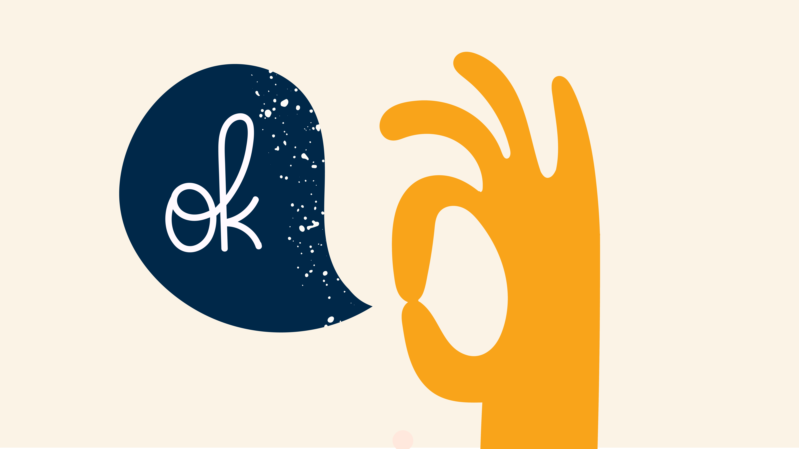
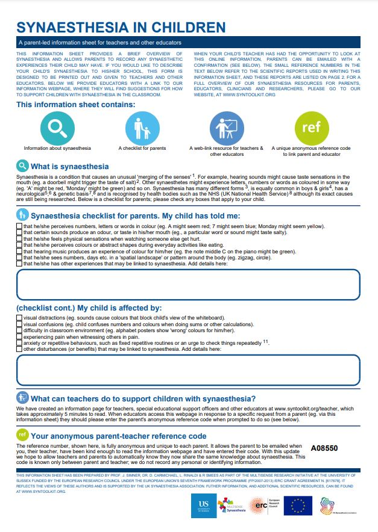

Information for Clinicians
Our funders, the European Research Council, have awarded grant funding for us to provide a library of tests for clinicians to diagnose synaesthesia in your child or adult clients. The tests will be available by early 2022.
This guidance is designed to help clinicians understand more about synaesthesia and its related traits and conditions. It provides information to help learn about synaesthesia from a clinical context, and how to manage negative outcomes. This guidance is suited to the following UK professionals (and their international equivalents):
- Educational and clinical psychologists - CAMHS (Mental Health Support for Children)
- SEND-COs, Inclusion Managers (supporting children in schools for well-being and educational differences)
- Support workers of children with autism
- Other professionals working with children
The following topics are intended to give you an overview of what synaesthesia entails and how it may impact on a child’s cognitive, social and emotional outcomes.
-------------
Key information about synaesthesia for clinicians
You may also find our FAQs section useful. We are also happy to answer any further questions you may have by email (please visit www.syntoolkit.org/contact-us for further details).
What is synaesthesia?
Synaesthesia (American spelling synesthesia) is a rare condition that gives rise to a type of ‘merging of sensations’. For people with synaesthesia (known as synaesthetes), one sense appears to merge, or cross with, another. Some synaesthetes see colours when they hear music (known as Music-colour synaesthesia or Sound-colour synaesthesia), for example. Other synesthetes experience tastes in the mouth when they hear words (e.g., the word “house” might trigger the taste of toffee). And for other synaesthetes, letters, numbers or words feel coloured in some way (e.g., A might be red, Monday might be green). There are many different types of synaesthesia and other examples include seeing time mapped out in space (e.g., seeing the months of the year laid out in an oval shape), feeling touch in the hand when eating food, or hearing sounds when watching silent moving objects.
There are likely to be well over 100 different types of synaesthesia depending on the sensations involved, so there is no one test to diagnose all conditions. Synaesthetes can also differ in whether they experience their synaesthesia in their minds eye (associators) or projected out of the body (projectors). The most common forms of synesthesia elicit colours or shapes and are commonly triggered by sequences such as letters, digits or days of the week.
Is synaesthesia a condition?
Scientists describe ‘synaesthesia’ as a condition to reflect the fact that most people do not have synaesthesia. The term ‘condition’ also shows synaesthesia can sometimes impact negatively. However, the majority of people with synaesthesia are not affected in any negative way at all, and even enjoy their differences. Some people with synaesthesia dislike the term ‘condition’, because they worry it implies a need to ‘cure’ synaesthesia. But scientists who use the term do not wish to imply this at all – they are simply looking for a neutral term to capture the differences and the potential need for support. When no support is needed, we can think of synaesthesia as a ‘trait’. But here we use the term ‘condition’ because we aim to identify and support children with synaesthesia, in ways that might benefit them in their well-being and education.
Should synaesthesia be ‘cured’?
The overwhelming scientific consensus is that synaesthesia does not need to be ‘cured’. In the majority of cases synaesthesia poses no significant health risks and is usually seen as having either a neutral or positive effect on a person’s life. In most cases, synaesthetes do not stand out from other members of society in obvious ways - it is quite possible that you have acquaintances who are synaesthetic without realising it. But there are some instances where synaesthesia might cause problems, and clinicians should focus on managing the discomfort rather than ‘curing’ the synaesthesia. Please see the following section below called ‘How might synaesthesia impact a child’s education and wellbeing?’
-------
How might synaesthesia impact a child's education and well-being?
For most children with synesthesia, their sensations do not impact greatly on their daily lives. But for some, synaesthetic perceptions can be intrusive, problematic, or disruptive to their chain of thought (if sensations are intense). In some cases, synesthesia can disrupt schooling or wellbeing. The headings below summarise the different ways that synesthesia can impact a child into Neutral or positive impacts, mild negative impacts and moderate to severe negative impacts. Click to find out more.
-----------------
Is synaesthesia linked to other traits and conditions?
There is growing evidence that specific conditions are more prevalent in people with synesthesia. These are described below. Click on the button to find out more.
------------
----------------------------------------------------
Child case studies & support strategies for children
-----------
Child case studies
Clinicians sometimes fail to identify synaesthesia within a broad network of symptoms and diagnoses. In clinical contexts, synaesthesia is often the poorly-understood component because it is not well known and there had been no independent way to verify childhood synaesthesia before now. This can effectively keep synaesthesia ‘off the radar’, where it would otherwise be the key to understanding perplexing clinical cases. SYNTOOLKIT remedies both problems, by providing a testing tool for synaesthesia (click here to find out more about tests), and information about symptoms and support.
A number of case studies are described below of children who have experienced more acute problems associated with synaesthesia. Such clinical cases are relatively rare, but provide valuable insight into the lived experiences of a special group of children, who have synaesthesia in combination with other traits. Many of these case studies are autistic children with a formal or diagnosis; others have a suspected diagnosis, or no diagnosis at all. Finding synaesthesia alongside autism in these case-studies is unlikely to be a coincidence (ref 1). Specific vulnerabilities associated with conditions like autism may increase the likelihood of negative synaesthesia experiences. For example, although most children will experience fear of certain objects or environments at some point, children with autism are more likely than their peers to fear more unusual triggers (ref 2) which might sometimes turn out to stem from their synaesthesia. Anxiety is also often found in autistic children, particularly phobias (ref 3). And anxiety is significantly more likely in children with synaesthesia (ref 4). Combined together, autistic synaesthetes may be more likely than non-autistic synaesthetes to have negative experiences associated with their synaesthesia. We present a number of case-studies below.
----------
----------
Managing and understanding synaesthesia in a clinical context
For relevant background reading, we recommend our short summary of synaesthesia clinical child case-studies. Below, we offer several key recommendations below when working with children who have potentially problematic or upsetting synaesthetic associations:
• Show you believe them – Many people with synaesthesia describing receiving negative feedback or disbelief when describing their synaesthetic experiences, so simply being believed and accepted is important. Some synaesthetic experiences seem unusual and may be difficult to understand for a non-synaesthete. But modern neuroscience imaging techniques show us that synaesthesia derives from measurable differences in the structure and function of synaesthetes’ brains (see refs 5-11). These benign differences give rise to genuine sensations of colour, taste, smell etc., because such sensations even for everyone are simply the result of neurons ‘firing’ in the brain (whether the cause is an everyday trigger like looking at coloured object, or the more unusual triggers in synaesthesia). It is also important to know that there are many different synaesthesias, which means many potential combinations of triggers and associations, which are still being catalogued by synaesthesia researchers (ref 12-14). If the child’s experiences do not fit with the types of synaesthesia described here it does not mean they are not real – although they are probably rarer.

• Understand their experiences – It is important to identify the specific synaesthesia of the child (i.e., the trigger and sensation) especially, of course, if these associations cause them distress. Recognising the child’s experiences as synaesthesia, for example, using our testing package can be the first steps in providing appropriate remediation. Having a greater understanding of the full range of associations the child experiences in their synaesthesia will help with strategies to alleviate the problems they might cause. For example, it is not unusual for synaesthetes to report unpleasant synaesthetic associations (e.g., lurid colours or unpleasant tastes in the mouth) which can sometimes lead to avoidance behaviours (refs 15,16). Alongside your own work with the child, you could ask the parent/carer to fill out the downloadable information sheet about childhood synaesthesia at www.syntoolkit.org\parent, which can help them to explain the child’s experiences to you. In addition, questions you could ask the child or parent/carer are: How do these associations make you feel? Are there certain times or places when your synaesthesia makes you feel bad? Are there times or places when you wish you didn’t have synaesthesia? If you could change something about your synaesthesia, what would it be? Is there something you wish other people understood about your synaesthesia? What would you like to tell people about your synasthesia? And so on. -----------------------------

• Consider comorbidities – studies show a number of other conditions linked to synaesthesia, including anxiety disorder and autism spectrum conditions. Although most people with synesthesia have neither anxiety nor autism, both are meaningfully elevated compared to rates found in the rest of the population (e.g., one study found that 30% of children with synaesthesia have anxiety at clinical level; ref 17). People with synaesthesia also have other traits, so a useful approach is to screen for possible co-morbidities, if a child is presenting with problems arising from synaesthesia. It is also important to consider comorbidities among syneasthesias themselves. Many people with synaesthesia have multiple forms of synaesthesia simultaneously, and this is also more likely with autistic individuals (ref 18). Our SYNTOOLKIT testing tool will identify two different types of synaesthesia (grapheme-colour synaesthesia and letter-personification synaesthesia, which trigger the sense of unusual colours or personalities). But even if the child is reporting different synaesthesias (e.g., unusual tastes) our tests could nonetheless identify a more generalised synaesthetic phenotype in the child. This is because multiple variants of synesthesia tend to co-occur within the same individual, so children with synaesthetic tastes are also likely to have one of the more common variants of synaesthesia targeted in our test. Hence, by focussing on two very common forms of synesthesia, our test can identify synaesthetes even if the initial presentation is different.
• Widen the support network – Children with synaesthesia benefit when all the important adults in their lives understand their experiences. Clinicians work with children and parents/carers but other prominent figures are the teachers they engage with every day. It’s important to know that synaesthesia is also often accompanied by academic differences, and sometimes with academic excellence (e.g., synaesthetes show superior scores in numerosity and vocabulary; refs 19, 20) so teachers may be surprised to learn that it can also pose difficulties for children in the classroom. Our downloadable info sheet about childhood synaesthesia is designed to be completed by parents/carer, and then shared with teachers (if the parent/carer thinks this appropriate). It might be useful to discuss this approach with the parent/carer. We also provide an information page for teachers and school-based practitioners who oversee equality of learning for children with individual differences (e.g., in the UK these are SEND-Cos, Special Educational Needs and Disabilities Co-ordinators).
• Therapeutic approaches – It is early days for synesthesia in clinical science, and more research is required to fill in the gaps in our understanding. There is little-to-no scientific study on how to address synaesthesia from a clinical perspective, largely because synaesthesia – in the mainstream -- is not generally considered a disease or condition-to-be-cured. However, although most people with synaesthesia are happy, some are not, and children in particular – especially those with concurrent autism spectrum conditions – can experience difficulties of the types described in our case studies. Where synaesthesia is causing distress, a useful starting point is to treat the problematic synaesthetic sensation as if it was a real object in the world. For example, one child case-study became selectively mute because she hated the unpleasant synaesthetic colour of her own voice. Telling the child to ‘ignore the colour’ would be like telling her to ignore the colour of her clothes, or the colour of her wallpaper, or the colour of her mother’s face – it would take considerable effort. Taking the first step to acknowledge that synaesthetic sensations are like real objects and therefore sometimes difficult to ignore is a useful path towards creating appropriate support. Once synaesthesia is considered like a real-world object, you can apply usual therapeutic approaches, e.g., phobia therapies, coping strategies etc.
References
1. Neufeld et al (2013) Is synesthesia more common in patients with Asperger syndrome? Front Hum Neurosci.
2. Mayes et al (2013) Unusual fears in children with autism. Res Autism Spectr Disord., 7(1).
3. van Steensel FJA, Bögels SM, Perrin S. Anxiety Disorders in Children and Adolescents with Autistic Spectrum Disorders: A Meta-Analysis. Clin Child Fam Psychol Review, 14(3).
4. Carmichael et al (2019) Is there a burden attached to synesthesia? Health screening of synesthetes in the general population. Br J Psychol., 110(3).
5. Rouw et al. (2007) Increased structural connectivity in Grapheme-Color Synesthesia. Nature neuroscience. 10.
6. Rouw et al (2011) Brain areas involved in synesthesia: a review. J Neuropsychol., 5(2).-----
7. Hubbard et al (2005) Individual differences among grapheme-color synesthetes: brain-behavior correlations. Neuron., 45(6).
8. Hubbard & Ramachandran (2005) Neurocognitive mechanisms of synesthesia. Neuron. 48(3).
9. Simner et al. (2016) Social responsiveness to inanimate entities: Altered white matter in a 'social synesthesia'. Neuropsychologia., 91.
10. Jones et al. (2011) The neural basis of illusory gustatory sensations: Two rare cases of lexical-gustatory synesthesia. Journal of Neuropsychology, 5.
11. Hupé & Dojat (2015). A critical review of the neuroimaging literature on synesthesia. Frontiers in Human Neuroscience, 9.
12. Simner (2019). Synesthesia: A very short introduction. Oxford: Oxford University Press.
13. Simner & Hubbard(Eds.) (2013) The Oxford handbook of synesthesia. Oxford University Press.
14. Cytowic & Eagleman (2009) N=1662-5161Wednesday is indigo blue: Discovering the brain of synesthesia. MIT Press.
15. Smilek et al. (2007). When “3” is a Jerk and “E” is a king: personifying inanimate objects in synesthesia. Journal of Cognitive Neuroscience, 19(6).
16. Simner & Holenstein (2007). Ordinal linguistic personification as a variant of synesthesia. Journal of Cognitive Neuroscience, 19.
17. Simner et al (2021) Wellbeing differences in children with synaesthesia: anxiety and mood regulation. Front Biosci (Elite Ed), 13.
18. Ward et al (2017) An autistic-like profile of attention and perception in synesthesia. Cortex, 107.
19. Smees et al. (2019) Learning in colour: children with grapheme-colour synesthesia show cognitive benefits in vocabulary and self-evaluated reading. Philosophical Transactions of the Royal Society B: Biological Sciences. 374.
20. Rinaldi et al (2020) Numeracy skills in child synesthetes: Evidence from grapheme-colour synesthesia. Cortex, 126.
-------------
Further information
The FAQs section has lots more useful information. Also there are a number of synaesthesia organisations that have useful information:
More information about synesthesia can also be found at the following national Synaesthesia Associations and Synaesthesia Web Communities:
UK:http://uksynesthesia.com
USA: http://synesthesia.info
Germany: http://www.synesthesie.org
Australia and New Zealand: http://www.synesthesia.com.au
Belgium: http://www.doctorhugo.org/synesthesia/
Netherlands: http://www.synesthesie.nl